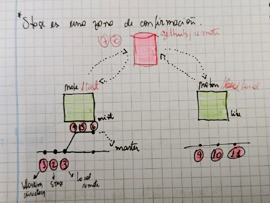

Git
Introducción
Git es un sistema de control de versiones distribuido ampliamente utilizado para el seguimiento de cambios en el código fuente durante el desarrollo de software. Fue creado por Linus Torvalds en 2005 para gestionar el desarrollo del kernel de Linux, pero desde entonces se ha convertido en una herramienta fundamental en el desarrollo de software en general, pues permite a los desarrolladores colaborar en proyectos de software al mantener un registro de todos los cambios realizados en el código fuente a lo largo del tiempo.
Comandos basicos git
- git init: Inicializa un repositorio Git en un directorio local.
- git clone [URL]: Clona un repositorio Git existente desde una URL remota hacia tu directorio local.
- git add [archivo(s)]: Agrega archivos al área de preparación para ser incluidos en el próximo commit.
- git commit -m “[mensaje]”: Crea un nuevo commit con los cambios agregados al área de preparación, junto con un mensaje que describe los cambios realizados.
- git status: Muestra el estado actual del repositorio, incluyendo los cambios sin agregar, los archivos agregados y los commits pendientes.
- git log: Muestra el historial de commits del repositorio.
- git pull: Obtiene cambios desde el repositorio remoto y los fusiona con tu rama actual.
- git push: Sube commits locales al repositorio remoto.
- git branch: Muestra una lista de ramas locales y resalta la rama actual.
- git checkout [nombre de la rama/archivo]: Cambia a una rama diferente o restaura un archivo a una versión anterior.
- git merge [nombre de la rama]: Fusiona los cambios de una rama específica en la rama actual.
- git remote -v: Muestra los repositorios remotos configurados junto con sus URLs.
3 trees /zonas para entender git
{kind=link}
Stage: es una zona de confirmación 
{kind=link}
Mapa Git
{kind=link}
Revert y Nueva Rama
Situacion Linear

Revert
git revert [--[no-]edit] [-n] [-m <parent-number>] [-s] [-S[<keyid>]] <commit>…
git revert (--continue | --skip | --abort | --quit)}{kind=link}
Nueva Rama
$ git branch <new-branch>{kind=link}
Git Switch
$ git switch <new-branch>{kind=link}
Git Switch -
git switch [<options>] [--no-guess] <branch>
git switch [<options>] --detach [<start-point>]
git switch [<options>] (-c|-C) <new-branch> [<start-point>]
git switch [<options>] --orphan <new-branch>{kind=link}